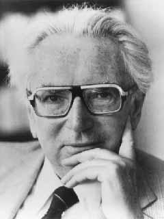

Stephen King
Stephen Edwin King (d. 21 Eylül 1947, Portland, Maine), korku, doğaüstü kurgu, gerilim, polisiye, bilimkurgu ve fantezi türlerinde eserler
üreten Amerikalı yazar, senarist ve yapımcı. Kitapları toplam 350 milyon kopyadan fazla sattı ve çoğunun film, televizyon dizisi, mini
dizi ve çizgi roman uyarlamaları yapıldı. Yedi tanesi Richard Bachman mahlasıyla olmak üzere, 63 roman ve 5 kurgu dışı eser yayınladı.
Ayrıca çoğu, kitap koleksiyonlarında yayınlanan 200 kadar öykü yazmıştır.
İlki 1987 yılında Sadist (Misery) romanı başta olmak üzere toplam 15 kez Bram Stoker Ödülü'ne layık görüldü. 2003 yılında Ulusal Kitap
Vakfı (National Book Foundation) tarafından "Amerikan Edebiyatına Üstün Katkı Ulusal Madalyası" ile onurlandırıldı. 2004 yılında Dünya
Fantazya Konvansiyonu (World Fantasy Convention) tarafından "Yaşam Boyu Başarı" ödülüne layık görüldü. 2007 yılında Amerikan Gizem
Yazarları Organizasyonu (Mystery Writers of America) tarafından "Grand Master" ödülüne layık görüldü. Amerikan edebiyatına yaptığı
katkılar nedeniyle, 2014 yılında Ulusal Sanat Vakfı (National Endowment for the Arts) tarafından "Ulusal Sanat Madalyası" ile
onurlandırıldı.
1974 yılında Doubleday etiketiyle ilk yayınlanan romanı Carrie, Türkiye'de Altın Kitaplar yayınevi tarafından Göz adıyla yayınlandı.
Özellikle 1982 yılında başlayıp 2005 yılında sona erdirmiş olduğu Kara Kule (The Dark Tower) serisi ile ünlüdür. Yeşil Yol
(The Green Mile), Esaretin Bedeli (the Man Who Loved Rita Hayworth aka the Shawshank Redemption) gibi pek çok kitabı senaryolaştırılıp
beyaz perdeye aktarılmıştır. İlk profesyonel kısa öykü satışını The Glass Floor adlı öyküsüyle Starling Mystery Stories'e yapmıştır
(1967). Kitaplarının çoğu memleketi Maine'de geçer.

Viktor E. Frankl
Viktor Emil Frankl (26 Mart 1905 - 2 Eylül 1997), Holokost'tan kurtulan Yahudi nörolog ve psikiyatrdı. Varoluşçu psikolojinin
bir şekli olan ve "Psikoterapinin Üçüncü Viyana Okulu" olarak da bilinen logoterapinin kurucusudur. En çok satan İnsanın Anlam
Arayışı (1946 yılında yayınlanan kitabın orijinal adı Trotzdem Ja Zum Leben Sagen: Ein Psychologe erlebt das Konzentrationslager
iken 1959 yılında farklı bir adla yayınlanmıştır: From Death-Camp to Existentialism) adlı kitabında bir toplama kampındaki
deneyimlerini anlatmıştır. Kazandığı deneyimlerle yaşamın anlamını bulabilmek için öncelikle bir amacımızın olması gerektiğini
vurgulayan Frankl, acının vazgeçilmez olduğu durumlarda acının da bir anlamı olabileceğini vurgulamıştır. Varoluşsal terapinin
en önemli ismi olan Frankl, insancıl psikolojiye önemli bir ilham kaynağı olmuştur. "Ruhsal sıkıntıların kaynağında, anlamsız
insanlarla anlamlı ilişkiler yaşama isteği ve çabası yatar" sözü ilgi çekmiştir.
Oğuz Atay
Oğuz Atay, 12 Ekim 1934'te Kastamonu'nun İnebolu ilçesinde dünyaya geldi. Babası, ağır ceza yargıcı ve Cumhuriyet Halk Partisi (CHP) VI. ve
VII. dönem Sinop, VIII. dönem Kastamonu vekili Cemil Atay'dır. İlk ve ortaokulu Ankara'da okuyan Atay, 1951'de bugünkü adı TED Ankara
Koleji olan Ankara Maarif Kolejinden, 1957'de İstanbul Teknik Üniversitesi İnşaat Fakültesinden mezun oldu. Askerliğini 1957-59 yılları
arasında yaptıktan sonra tamir ve kontrol elemanı olarak Kadıköy vapur iskelesinin yapımında çalıştı. Görevinden istifa ettikten sonra
İstanbul Devlet Mühendislik ve Mimarlık Akademisi (şimdiki Yıldız Teknik Üniversitesi) İnşaat Bölümü'nde öğretim üyesi oldu. 1975'te
doçent olan Atay, Topografya adlı bir de mesleki kitap yazdı. Çeşitli dergi ve gazetelerde makale ve söyleşileri yayımlandı. Oğuz Atay,
Tutunamayanlar'ın 1971-72'de yayımlanmasından sonra, önemli bir tartışmanın odak noktası oldu. Bu romanıyla 1970 TRT Roman Ödülü'nü
kazandı. Roman, Oğuz Atay'ın 20. ölüm yıldönümü olan 1997 yılında UNESCO tarafından 20. yüzyıl Türk edebiyatının en seçkin eseri olarak
seçilmiştir.
Türk edebiyatının en önemli eserlerinden biri olan Tutunamayanlar, eleştirmen Berna Moran tarafından, "hem söyledikleri hem de söyleyiş
biçimiyle bir başkaldırı" olarak nitelendirilmiştir. Moran'a göre Tutunamayanlar'daki edebi yetkinlik, Türk romanını çağdaş roman
anlayışıyla aynı hizaya getirmiş ve ona çok şey kazandırmıştır.
Atay'ın büyük etki yaratan eseri Tutunamayanlar'ı 1973'te yayımladığı Tehlikeli Oyunlar adlı ikinci romanı izlemiştir. Hikâyelerini
Korkuyu Beklerken başlığı altında toplayan Atay, 1911-1967 yılları arasında yaşamış ve aynı zamanda hocası olan Prof. Mustafa İnan'ın
hayatını konu edinen Bir Bilim Adamının Romanı'nı 1975 yılında yayımlamıştır. 1973 yılında yayımlanan Oyunlarla Yaşayanlar adlı oyunu,
Devlet Tiyatrosu'nda sahnelenmiştir. Atay, beyninde çıkan habis bir tümör nedeniyle büyük projesi "Türkiye'nin Ruhu"nu yazamadan
13 Aralık 1977'de, arkadaşı Altay Gündüz'ün Mecidiyeköy'deki evinde hayatını kaybetmiştir. Atay, Edirnekapı Mezarlığı Sakız Ağacı
mevkiine defnedildi.
Eserlerinde düşle gerçeğin birbirine karışması, üstkurmacanın kurgunun ana ilkesi olması Oğuz Atay’ı postmodernist roman kategorisinde
eser veren ilk Türk yazar yapmıştır. Oğuz Atay, özellikle Tutunamayanlar romanında, modern şehir yaşamı içinde bireyin yaşadığı
yalnızlığı, toplumdan kopuşları ve toplumsal ahlaka, kalıplaşmış düşüncelere yabancılaşan, tutunamayan bireylerin iç dünyasını anlatır.
Yapıtları eleştiri, mizah ve ironi barındırır. Kastamonu Valiliği kendisi adına 2007 yılından beri Oğuz Atay Edebiyat ödülleri
vermektedir.
William Woodruff
William Woodruff, Dünya Tarihi, Tarih kategorilerinde eserler yazmış bir yazardı. Dünya tarihi dünya çapında çok satılan eserlerden biridir.
1946'da Oxford'da ekonomi ve dünya tarihi alanındaki çalışmalarını yeniledi. 1950'de Bank of England tarafından desteklenen Houblon-Norman
araştırma görevlisi oldu ve 1952'de Fulbright Scholar olarak Harvard Üniversitesi'ne gitti. Daha sonra Illinois Üniversitesi'nde
profesör olarak bir dönem geçirdi ve 1956'da ikinci eşi Helga ile tanıştığı Avustralya'nın Melbourne Üniversitesi'nde Ekonomi Tarihi
Bölümü'nün başına geçti. Bunu Princeton, Berlin, Tokyo ve Oxford'da çeşitli misafir profesörlüklerle takip etti..
1966'dan emekli olduğu 1996'da Fahri Profesör olana kadar Florida Üniversitesi'nde Lisansüstü Araştırma Profesörüydü. Eylül 2008'de Florida,
Gainesville'de öldü. Eşi Helga, kızı ve dört oğlu ve ilk evliliğinden iki oğlu tarafından hayatta kaldı. Öldükten sonra kitapları popülerlik
kazandı.

Irvin D. Yalom
Irvin David Yalom (d. 13 Haziran 1931, Washington, DC), Yahudi asıllı Amerikalı psikanalist, psikiyatrist, psikoterapist ve yazar.
Profesör unvanına sahip olan Yalom, Standford Üniversitesi'nden emekliye ayrılmış olup, alanında oldukça zengin bir yapıya sahip,
bilimsel kitapların ve romanların sahibidir. Yalom, varoluşçu psikoterapinin en önemli yaşayan temsilcilerinden biridir.
Aynı zamanda Uluslararası Sigmund Freud – Psikoterapi 2009 ödülünün de sahibidir.Washington, DC'de dünyaya gelen Yalom'un Yahudi kökenli
ailesi, I. Dünya Savaşı'nın bitmesinden kısa bir süre sonra Polonya sınırlarına yakın bir Rus kasabası olan Celtz'ten ABD'ye göç etmiştir.
ABD'nin en etkili psikanalistlerinden biri olarak kabul edilen Yalom'un, kendine akıl hocası olarak kabul ettiği kişi Jerome D. Frank'dı.
Yalom, psikanalistler içinde sürekli olarak kritize edilen psikanalizin geliştirilmesinde öncülük yapmış ve aynı zamanda psikanalizdeki
uzun ama etkileyici yeni rehabilitasyon yöntemleriyle insanın psikolojik rahatsızlıklarını yeniden ve daha iyi anlamayı sağlarken,
uyguladığı yöntemlere has içeriklerle dolu yazdığı romanlar onun edebiyat dünyasında da yer edinmesine yardımcı olmuştur.
Irvin David Yalom, toplum bilimci ve yazar Marily Yalom ile evlidir. Bu evlilikten dört çocukları olmuştur. Kaliforniya,
Palo Alto'da yaşamaktadır. Yazdıklarında kullandığı genel metafor psikanalitiktir ve felsefeyle de iç içedir. Grup terapilerinde
uyguladığı varoluşçu yöntem, klasik bir yöntem olsa da Yalom, bunun günümüz psikanalizinde deforme olmasını engelleyen çok daha sonuç
alıcı bulgularla devam ettirmiştir.

Sezgin Kaymaz
1962’de Sinop’ta doğdu. 1967’den itibaren on üç yıl Konya’da yaşadı, Konya Anadolu Lisesi’ni bitirdi. 1980’de Ankara Üniversitesi
Hukuk Fakültesi’ne girip iki yıl sonra terk etti. Ankara 19 Mayıs Spor Akademisi’ne girdi, girer girmez terk etti. Hacettepe
Üniversitesi İngiliz Dilbilimi’ne girdi, bu sefer okudu, sonuna kadar da gitti, fakat alt sınıfın Türkçe dersini veremediği
söylendiği için kızıp onu da terk etti. 1976’dan itibaren oyuncu ve teknik direktör olarak hentbolla uğraştı.
Bütün kategorilerdeki Hentbol Milli Takımlarında Baş Antrenör olarak görev aldı, Teknik Kurul Başkanlığı yaptı.
2006-2013 yılları arasında Türkiye Voleybol Federasyonu’nda İcra Kurulu Koordinatörü olarak çalıştı.
Artık sadece yazıyor.Uzunharmanlar’da Bir Davetsiz Misafir (1997), Geber Anne! (1998), Kaptanın Teknesi (1999),
Lucky (2000), Zindankale (2004), Sandık Odası (2005), Medet (2007), Ateş Canına Yapışsın (2008), Kün (2013),
Deccal’in Hatırı (2014), Kısas (2014), Bakele (2020), Son Şûra (2021), Bugün Bize Kim Geldi (2021).
Necati Cumali
1957-1959 yıllarında Türkiye'nin Paris Büyükelçiliği Basın Ataşeliği'nde çalıştı. Paris yılları "Aşk Duvarı" ve "Zorla İspanyol" gibi bazı oyunlarına ve kimi hikâyelerine kaynaklık etti. 1959'da "hayatını edebiyat adamı olarak kazanma" kararıyla yurda döndü; İstanbul'a yerleşti. 1959 - 1963 yıllarında İstanbul Radyosu'nda redaktörlük yaptı. İlk romanı "Tütün Zamanı", 1959'da tefrika edildi. Avukatlık yıllarında edindiği gözlemlerine dayanan Susuz Yaz öyküsünü 1960 yılında yazdı. Üç perdelik bir oyun olarak tiyatroya da uyarladığı öykü, Metin Erksan tarafından filme çekilmiş (1963) ve 14. Uluslararası Berlin Film Festivali‘nde Altın Ayı’yı kazanarak (1964) Türk sinemasında çığır açmıştır.
1960 yılında hariciyeci Berin Teksoy ile evlenen sanatçı, 1963'ten sonra yaşamını roman ve oyun yazarlığı ile sürdürdü. Eşinin işi nedeniyle 1963-1965'te Tel Aviv ve Paris'te bulundu. Necati Cumalı'nın yazdığı bazı yazılar nedeniyle 1966'da eşi Berin Hanım görevinden alınınca İstanbul'a yerleştiler. 1967'den itibaren Makedonya, ABD, Sovyetler Birliği, Bulgaristan, İran, Yunanistan, Almanya, Çekoslovakya, Finlandiya'ya yurt dışı geziler yaptı. Bu geziler eserlerinin oluşmasında etkili oldu.
“Makedonya 1900” ile 1970 yılında ikinci kez Sait Faik Hikâye Armağanı'nı, “Yağmurlu Deniz” adlı kitabıyla Türk Dil Kurumu 1969 Şiir Ödülü'nü, “Dün Neredeydiniz” adlı oyunuyla Kültür Bakanlığı 1981 Tiyatro Ödülü'nü, “Tufandan Önce” kitabıyla 1984 Yeditepe Şiir Armağanı’nı, “Viran Dağlar” romanı ile 1995 Orhan Kemal Roman Armağanı, Yunus Nadi Roman Ödülü ve Ömer Asım Aksoy Ödülü'nü kazandı. Türk tiyatrosuna katkılarından dolayı kendisine 2000 yılında Tiyatro Yazarlar Derneği tarafından “Onur Ödülü” verildi.
10 Ocak 2001 tarihinde yakalandığı karaciğer kanserinden kurtulamayarak İstanbul'da hayata veda etti. Cenazesi, Zincirlikuyu Mezarlığı'na defnedildi.
Ölümünden sonra 2001 yılı “Şiir Büyük Ödülü”’ne değer bulundu ve ödülü eşi Berin Cumalı'ya sunuldu. Urla'da çocukluğunu geçirdiği ve "Anı ve Kültür Evi" olarak ziyarete açılmış;
İstanbul'un Beşiktaş ilçesinde Vişnezade Şairler Parkı'na heykeli dikilmiştir. Urla'da her yıl 10 Ocak'ta anılmaktadır.
{kind=link}
{kind=link}
{kind=link}
{kind=link}
{kind=link}